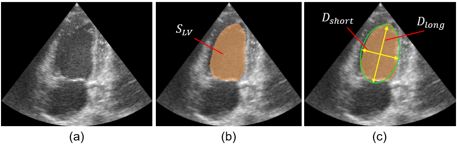
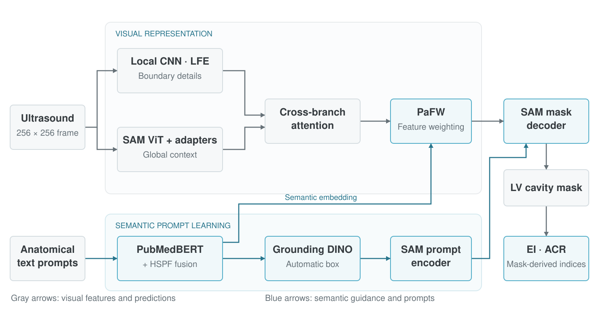
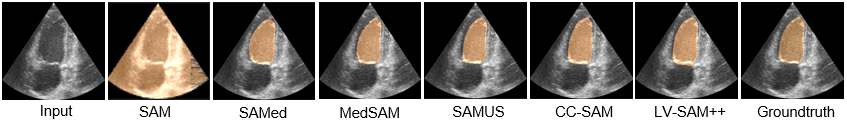
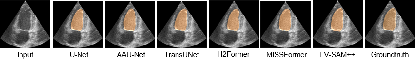
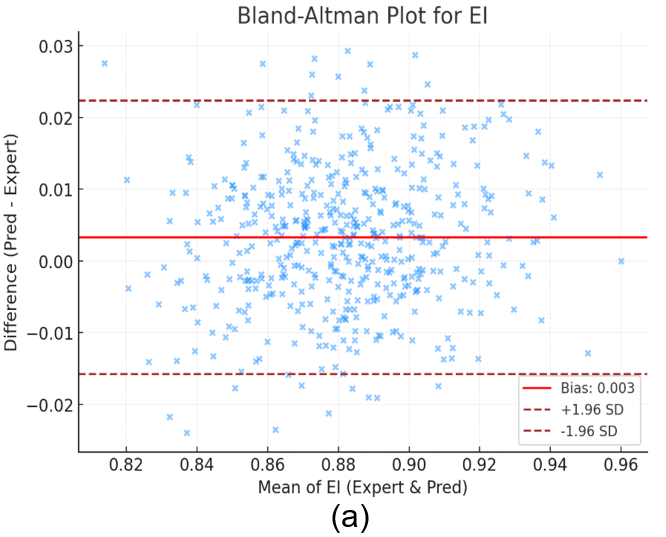
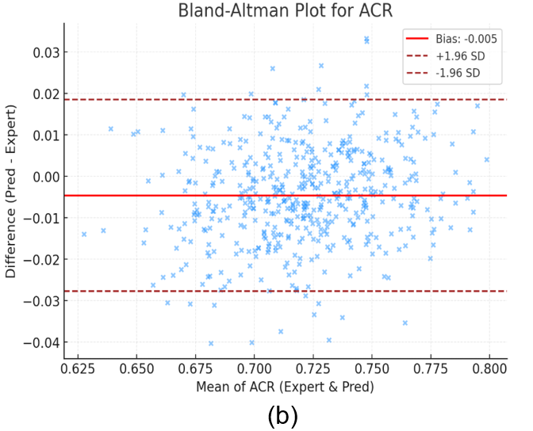
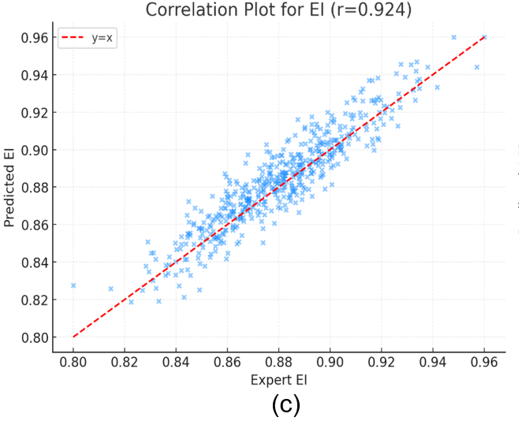
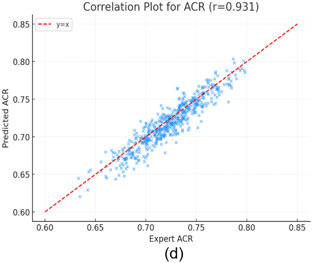
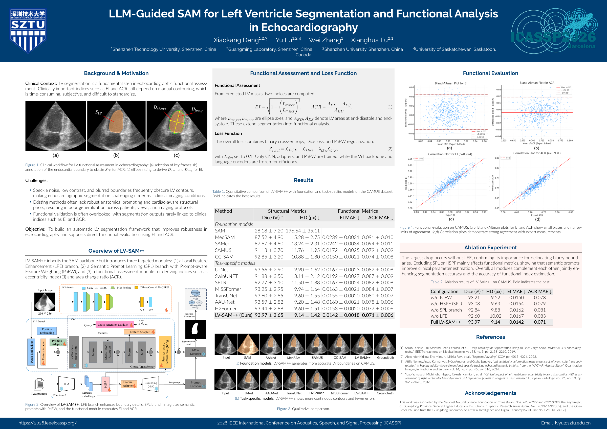

ICASSP 2026 · Poster
LV-SAM++:LLM-Guided SAM for Left Ventricle Segmentation and Functional Analysis in Echocardiography
1 School of Artificial Intelligence, Shenzhen Technology University
2 Guangdong Laboratory of Artificial Intelligence and Digital Economy (SZ)
3 School of Applied Technology, Shenzhen University
4 Department of Mechanical Engineering, University of Saskatchewan
* Corresponding authors: lvyu@sztu.edu.cn · fuxianghua@sztu.edu.cn
Anatomical guidance, precise contours, measurable function.
Automated semantic prompts and local ultrasound features adapt SAM for left ventricle segmentation and mask-derived EI and ACR analysis.


- Segmentation Dice
- 93.97%
- CAMUS apical two-chamber view
- Hausdorff distance
- 9.14 px
- Boundary accuracy
- Area change ratio error
- 0.071
- ACR mean absolute error
Overview
Bringing anatomical knowledge into automated LV segmentation.
Speckle noise, low contrast, and blurred boundaries make the left ventricle (LV) difficult to delineate in echocardiography. Applying the Segment Anything Model (SAM) directly also leaves a gap between general visual representations and cardiac anatomy, while manual prompts add work to the analysis.
LV-SAM++ addresses this with semantic prompt learning, prompt-aware feature weighting, and a local CNN branch. The framework generates prompts automatically, combines local boundary details with global context, and computes the eccentricity index (EI) and area change ratio (ACR) from the predicted masks.
The main finding. On CAMUS A2C, LV-SAM++ achieves the highest Dice and lowest HD, EI MAE, and ACR MAE among the methods compared in the paper. The evaluation connects segmentation accuracy with the accuracy of measurements derived from the LV cavity.
Method
Semantic prompts meet global context and local boundary detail.


- 01
Learn semantic prompts
PubMedBERT encodes hierarchical medical descriptions. Hierarchical Semantic Prompt Fusion (HSPF) forms a compact anatomical embedding, supporting automatic box prompts and semantic guidance.
- 02
Refine visual features
Standard and dilated convolutions enhance local structures. Cross-branch attention combines these features with the adapted SAM ViT, while Prompt-aware Feature Weighting (PaFW) emphasizes features aligned with the semantic embedding.
- 03
Measure from masks
The SAM decoder produces an LV cavity mask. Ellipse axes describe cavity shape through EI; areas at end-diastole and end-systole provide ACR, linking the segmentation to functional analysis.
Training and implementation details
Backbone: SAM ViT with lightweight adapters, overlapping patches, a local CNN branch, and semantic prompt learning. The ViT backbone and language encoder remain frozen.
Objective: binary cross-entropy + Dice loss + 0.1 × PaFW regularization. The regularizer encourages focused semantic attention.
Optimization: Adam, learning rate 0.01, weight decay 10−4, StepLR every 50 epochs, batch size 16, and 200 epochs on an NVIDIA RTX 3090. The checkpoint with the best validation Dice is reported.
Results on CAMUS A2C
The study evaluates the apical two-chamber view of CAMUS, a dataset with echocardiography from 500 patients. The paper uses the provided test set and reserves 10% of the training patients for validation.
| Method | Dice (%) ↑ | HD (px) ↓ | EI MAE ↓ | ACR MAE ↓ |
|---|---|---|---|---|
| Foundation models | ||||
| SAM | 28.18 ± 7.20 | 196.64 ± 35.11 | — | — |
| MedSAM | 87.52 ± 4.90 | 15.28 ± 2.75 | 0.0239 ± 0.0031 | 0.091 ± 0.010 |
| SAMed | 87.67 ± 4.80 | 13.24 ± 2.31 | 0.0242 ± 0.0034 | 0.094 ± 0.011 |
| SAMUS | 91.13 ± 3.70 | 11.76 ± 1.95 | 0.0172 ± 0.0025 | 0.079 ± 0.009 |
| CC-SAM | 92.85 ± 3.20 | 10.88 ± 1.80 | 0.0150 ± 0.0021 | 0.074 ± 0.008 |
| Task-specific models | ||||
| U-Net | 93.56 ± 2.90 | 9.90 ± 1.62 | 0.0167 ± 0.0023 | 0.082 ± 0.008 |
| SwinUNET | 91.88 ± 3.50 | 13.11 ± 2.12 | 0.0192 ± 0.0027 | 0.087 ± 0.009 |
| SETR | 92.77 ± 3.10 | 11.50 ± 1.88 | 0.0167 ± 0.0024 | 0.082 ± 0.008 |
| MISSFormer | 93.25 ± 2.95 | 9.94 ± 1.64 | 0.0163 ± 0.0021 | 0.084 ± 0.007 |
| TransUNet | 93.60 ± 2.85 | 9.60 ± 1.55 | 0.0155 ± 0.0020 | 0.080 ± 0.007 |
| AAU-Net | 93.59 ± 2.82 | 9.20 ± 1.48 | 0.0160 ± 0.0021 | 0.078 ± 0.006 |
| H2Former | 93.44 ± 2.88 | 9.60 ± 1.51 | 0.0153 ± 0.0020 | 0.077 ± 0.006 |
| LV-SAM++ | 93.97 ± 2.65 | 9.14 ± 1.42 | 0.0142 ± 0.0018 | 0.071 ± 0.006 |
Values reproduce Table 1, including its reported ± values. ↑ Higher is better. ↓ Lower is better. Bold marks the best reported value in each column; — denotes an unreported result. HD: Hausdorff distance. MAE: mean absolute error.
Qualitative comparisons




Ablation study: contribution of each module
Removing any component reduces performance. The largest Dice drop follows removal of the local feature enhancement branch: 93.97% → 92.60%.
| Configuration | Dice (%) ↑ | HD (px) ↓ | EI MAE ↓ | ACR MAE ↓ |
|---|---|---|---|---|
| Without PaFW | 93.21 | 9.52 | 0.0150 | 0.078 |
| Without HSPF | 93.08 | 9.63 | 0.0154 | 0.079 |
| Without SPL branch | 92.84 | 9.88 | 0.0162 | 0.081 |
| Without LFE | 92.60 | 10.02 | 0.0167 | 0.083 |
| Full LV-SAM++ | 93.97 | 9.14 | 0.0142 | 0.071 |
PaFW: Prompt-aware Feature Weighting. HSPF: Hierarchical Semantic Prompt Fusion. SPL: semantic / structured prompt learning branch. LFE: Local Feature Enhancement.
From segmentation to functional analysis
Eccentricity index · EI
Uses the major and minor axes of an ellipse fitted to the LV cavity.
EI = √(1 − (Lminor / Lmajor)2)
MAE: 0.0142 ± 0.0018
Reported bias: +0.003 · Correlation: r = 0.924
Area change ratio · ACR
Measures relative cavity-area change from end-diastole (ED) to end-systole (ES).
ACR = (AED − AES) / AED
MAE: 0.071 ± 0.006
Reported bias: −0.005 · Correlation: r = 0.931








Plots from Figure 3 of the paper. Equations follow the manuscript’s functional assessment definitions in Eqs. (3)–(4).
Scope of the evidence
The evaluation is limited to CAMUS. The indices are derived from endocardial masks, and the prompts do not incorporate patient-specific clinical inputs. Multi-center validation, epicardial segmentation, and patient-aware or multi-view prompts remain future work.
Conference poster
LV-SAM++ at ICASSP 2026.
The poster brings together the motivation, framework, quantitative comparisons, functional evaluation, and ablation study.

Resources
Citation
@inproceedings{deng2026lvsamplusplus,
title = {{LLM}-Guided {SAM} for Left Ventricle Segmentation
and Functional Analysis in Echocardiography},
author = {Deng, Xiaokang and Lu, Yu and Zhang, Wei
and Fu, Xianghua},
booktitle = {ICASSP 2026 - 2026 IEEE International Conference
on Acoustics, Speech and Signal Processing (ICASSP)},
year = {2026},
pages = {4826--4830},
publisher = {IEEE},
doi = {10.1109/ICASSP55912.2026.11464908},
url = {https://doi.org/10.1109/ICASSP55912.2026.11464908}
}Acknowledgments
This work was supported by the National Natural Science Foundation of China (62576222, 62266039), the Key Project of Guangdong Province General Higher Education Institutions in Specific Research Areas (2023ZDZX2055), and the Open Research Fund from the Guangdong Laboratory of Artificial Intelligence and Digital Economy (SZ) (GML-KF-24-06). Additional support was provided in part by the Chinese Scholarship Council (CSC).